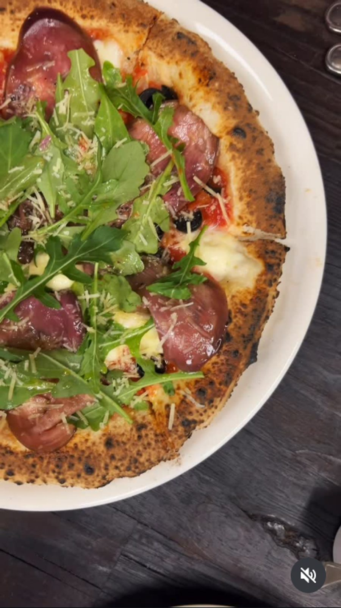
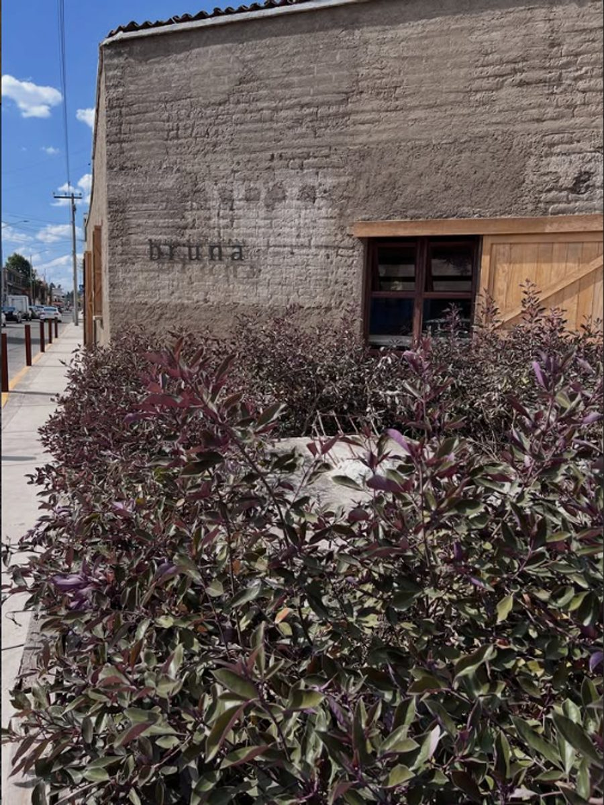
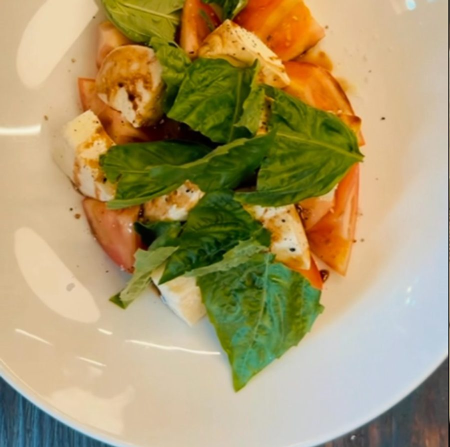
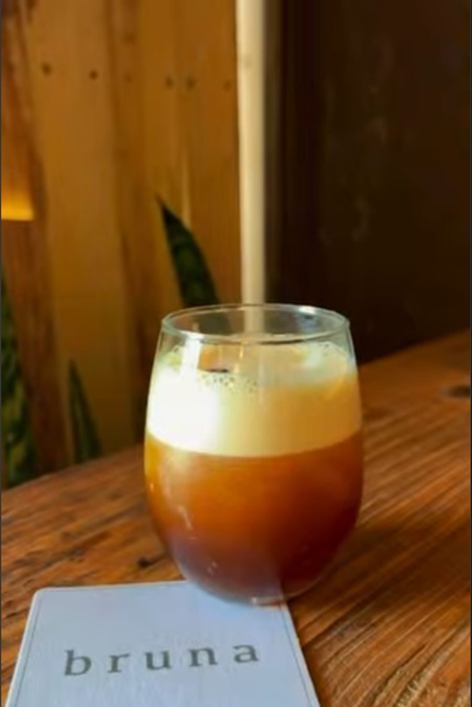

Pizza napolitana
Masa de fermentación lenta y horno de leña, con mozzarella di bufala y San Marzano D.O.P.
En Bruna hacemos pizza napolitana como se hace desde siempre: masa de fermentación lenta, horno de leña y pocos ingredientes, elegidos con cuidado. Trabajamos con productos D.O.P. — mozzarella di bufala, San Marzano — porque en una pizza napolitana la diferencia está en el origen de lo que se pone encima, no en la cantidad.
Más allá de la pizza, Bruna es un lugar para sentarse a la mesa sin prisa: antipasti para compartir, un Aperol Spritz o una copa de vino antes de la cena, y una carta pensada para la cultura del aperitivo. Un espacio pequeño e íntimo, pensado para quedarse un rato.


Masa de fermentación lenta y horno de leña, con mozzarella di bufala y San Marzano D.O.P.

Tablas de quesos y embutidos, carpaccios y ensaladas pensadas para compartir en la mesa.

Aperol Spritz, vinos italianos y una carta pensada para la cultura del aperitivo.
★★★★★
"Altamente recomendable, corrimos con suerte por no tener reservación... Pero bastante agradable el lugar, los alimentos a pesar de ser pequeño la atención es muy buena 👌 prueben su carpaccio de betabel deliciosooo 🤤"
★★★★★
"Bonito lugar 😸, excelente atención de todo el equipo. Siempre me alegrará ir a este lugar ya que todo es exquisito y atención rápida."
★★★★★
"Comer en Bruna es delicioso. Las bebidas, pizzas y postres, todo con buen sabor. La atención del equipo es espectacular, Rodolfo fue muy atento. El lugar es agradable y acogedor, pequeño e íntimo."
Estamos en Metepec, Estado de México.
Martes a Domingo
2:00 p.m. – 11:00 p.m.
Lunes cerrado